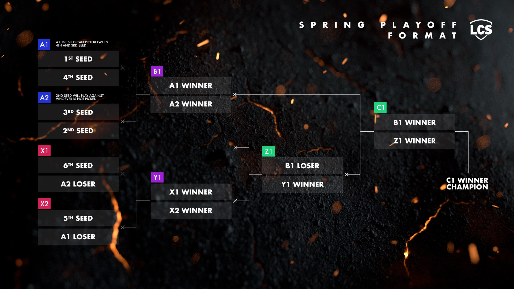
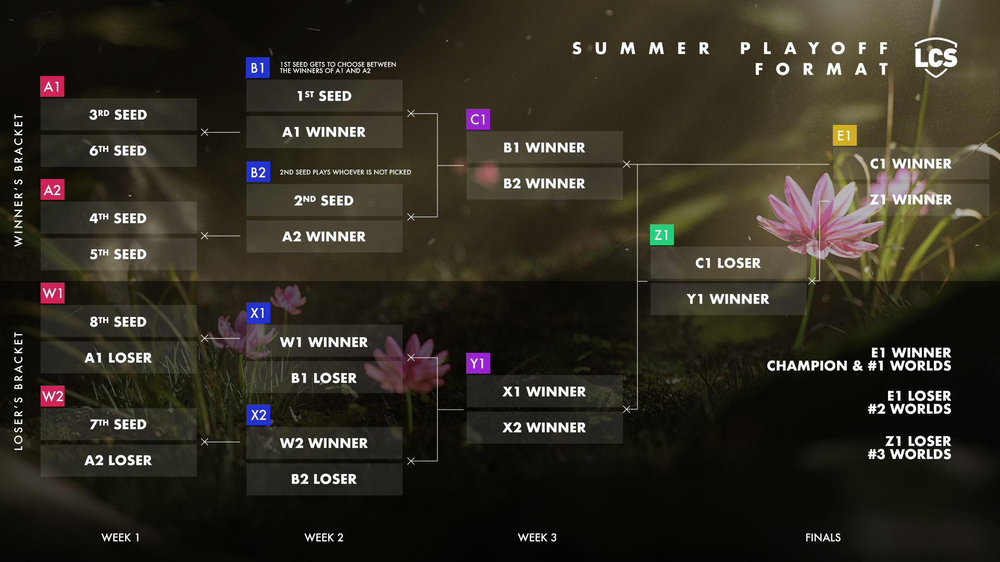
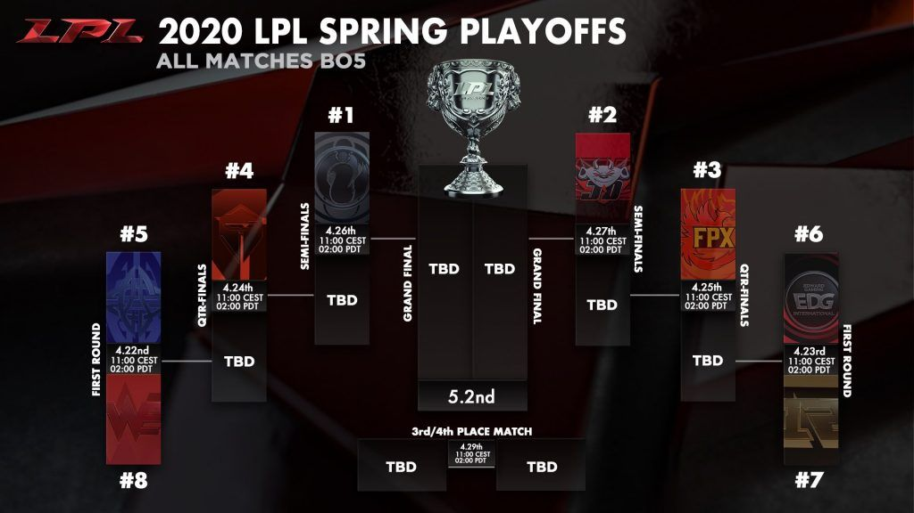
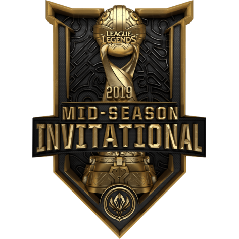
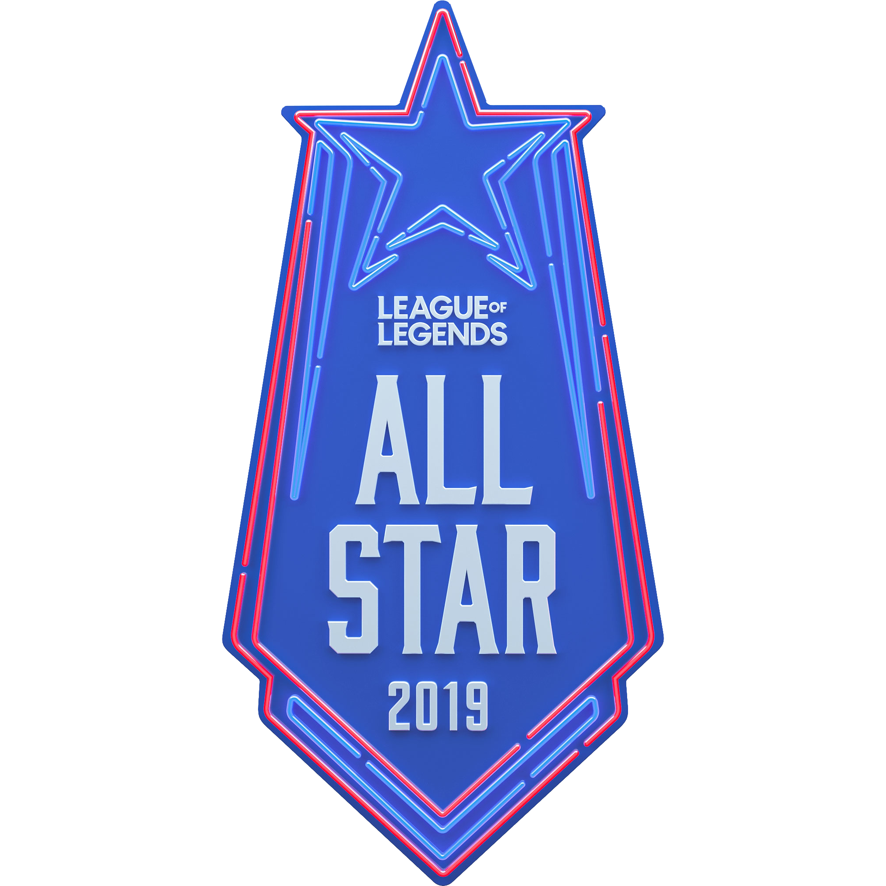

The Main Events of League of Legends
Region Tournaments
Regular split LEC / LCS
During the regular season 10 teams participate in a total of 18 best of one matches.
These matches are played in a double round robin, which means that each team gets to face all other teams twice.
LEC Playoffs
After the 18 split matches the top 6 teams advance to the playoffs with the top 4 headed to the winners
bracket giving them a 2nd chance for the finals if they lose.
The 5th and 6th seed goes to the
losers bracket, where they will get knocked out of the bracket after a loss. These matches are all best
of 5.
The LEC Bracket format.
LCS Playoffs
The LCS playoffs consists of a two bracket system where the top 6 teams get to fight at a chance for the finals
However from the summer season and forwards the top 8 teams will get to fight to get to the finals
The LCS Bracket format from spring.
The LCS Bracket format from summer.
Regular split LCK
The Korean split is a lot like the European and American. Their system is also a double round robin, these matches are best of 3 instead.
LCK Playoffs
The korean playoffs consists of 4 best of 5 matches. where the 4th and 5th seed start by going up against
each other.
The winner of that match goes against the 3rd seed and so on.
The LCK Bracket format.
Regular split LPL
The regular split in China is like the Korean format, except this season is only a single round robin with best of 3 matches.
LPL Playoffs
The chinese palyoffs consist of a dual bracket sistem where the top 8 teams gets to fight for the trophy.
The LPL Bracket format.
International Tournaments
Mid Season Invitational - Spring
MSI Logo
The Mid Season Invitational is held between the first and second splits of all regions. The champions of
each competitive region compete for the MSI title.
Teams from China, Europe, and Korea are invited directly to the Main Event, while teams from other
regions must qualify through the Play-In.
Rift Rivals - Spring
Rift Rivals Logo
Rift Rivals is an international event taking place in spring. Teams from two sets of regions meet at two seperate LAN tournaments.
There's Two events with two or four regions each:
NA & EU
KR. CN, TW/HK/MO & VN
Teams are invited and seeded based on their rankings in the spring split of each region.
World Championship - End of Year
Worlds Logo
The World Championship is the conclusion of the esports season, and one of the biggest events the year has to offer.
A total of 24 teams from all regions are invited. 12 of these teams, mainly the teams from the minor regions go to the play-in stage, along with the 3rd seeds from the major regions where they play for a chance to go onto the main event, where the last 12 teams await.
The play in stage follows a group stage format where the 12 teams are divided into 4 groups. The winners from these groups go onto the main stage.
In the main stage the 16 teams get divided into another 4 groups where they will follow a double round robin, best of one match format.
The top two teams from each group go on to the knockout stages.
In the knockout stage the 4 #1 teams go against a random #2 team.
All Stars - December
All Stars Logo
The all Stars event is a massive event mainly made "for fun"
The event consists of showmatches aswell as a 1v1 tournament.
The fans get to vote what pro players they want to see at the event, and whoever gets most votes will get an invite to the event.